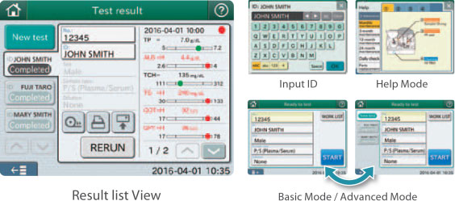
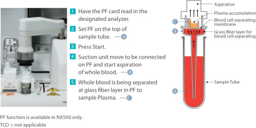
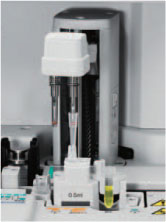

Easy operation by touch screen
5.7 inch VGA, 640 ✕ 480. Qwerty touch Key board. Basic Mode / Advanced Mode are available according to user preference. (Basic Mode: displays operation procedure for one sample only. Advanced Mode: displays operation procedure for one sample and measurement status for previous measured samples.)

No pre-treatment of sample required

Plasma Filter (PF) can cut the turn around time and the pre-treatment process of the sample. It can generate plasma sample by aspirating and separating the whole blood inside the PF within 1 minute. Just set the PF on top of the sample tube and press START.
Automatic dilution

Dilution, a time consuming process, is also automated in FUJI DRI-CHEM. Just set the ratio of dilution and press START. Dilution test also can be performed simultaneously with the regular tests, requiring no separation of tests.